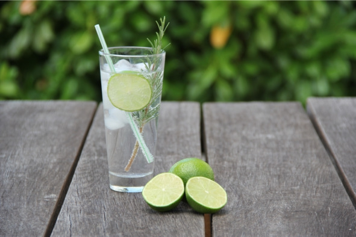

О культуре пития .. Популярные коктейли с джином....


Gin-Tonic («Джин-Тоник»)
Впервые смешивать джин с тоником начали британские солдаты в XVIII веке, воевавшие в Индии. Так они спасались от малярии и цинги.
Ингредиенты:
– джин – 50 мл;
– тоник – 100 мл;
– лайм – 1—2 дольки;
– лед в кубиках – 100 г.
Рецепт: высокий бокал с толстым дном (хайбол) на треть заполнить льдом. Добавить джин, подождать 30—40 секунд, пока он не начнет потрескивать от холода. Налить холодный тоник. Выжать в стакан сок одной дольки лайма (в крайнем случае подойдет лимон), другая долька используется для украшения напитка.

Джин-тоник
Negroni («Негрони»)
Коктейль придумал граф Камилло Негрони, родившийся в 1868 году в семье флорентийских аристократов. Будучи военным, он много путешествовал по миру, пробуя спиртное разных стран. Рецепт назван в честь автора в 1948 году.
Ингредиенты:
– джин – 30 мл;
– биттер Campari – 30 мл;
– красный вермут – 30 мл;
– апельсин – 1 долька;
– лед в кубиках – 100 г.
Рецепт: бокал доверху наполнить льдом. Добавить джин, вермут и Campari, перемешать. Украсить долькой апельсина.
Tom Collins («Том Коллинз»)
Отличается хорошо сбалансированным кисло-сладким вкусом и освежающим эффектом. Этот коктейль стал прародителем целой группы, которая готовится на основе крепкой алкогольной основы с добавлением лимонного сока и газировки. Том Коллинз – вымышленный персонаж, придуманный в Северной Америке в конце XIX века ради игры: сговорившись, группа людей начинала разговор о несуществующем Томе Коллинзе. При этом в компании обязательно был один человек, который не знал о заговоре. «Жертве» казалось, что Тома знают все в мире, кроме нее.
Ингредиенты:
– джин – 50 мл;
– лимонный сок – 25 мл;
– сахарный сироп – 25 мл;
– содовая или «Спрайт» – 100 мл;
– коктейльная вишня – 1 штука (необязательно);
– апельсин – 1 долька (необязательно);
– кубики льда – 350 г.
Рецепт: высокий бокал доверху наполнить кубиками льда. Смешать в шейкере со льдом (или предварительно охладить ингредиенты) сироп, лимонный сок и джин. Перелить смесь в бокал через стрейнер (ситечко). Аккуратно добавить содовую (появится много пены), перемешать ложечкой. Готовый коктейль украсить вишенкой и долькой апельсина.
White lady («Белая леди»)
Коктейль запоминается мягким, хорошо сбалансированным цитрусовым вкусом с легкой кислинкой. Происхождение названия не установлено. Самые популярные версии: в честь известного британского приведения, от сорта белой розы из Китая, из-за мягкого вкуса и характерного цвета.
Ингредиенты:
– джин (сухой лондонский) – 40 мл;
– апельсиновый ликер («Трипл Сек» или «Куантро») – 30 мл;
– лимонный сок – 20 мл;
– кубики льда – 200 г;
– апельсиновая цедра или долька лимона – 1 штука.
Рецепт: смешать все напитки в шейкере со льдом. Полученную смесь перелить через ситечко в охлажденную коктейльную рюмку (бокал для мартини). Украсить готовый коктейль лимонной долькой или апельсиновой цедрой. Пить небольшими глотками.
Bronx («Бронкс»)
Коктейль создан барменом отеля Waldorf Джонни Солоном и назван в честь зоопарка Bronx Zoo, в котором за несколько дней до того, как придумать рецепт, побывал бармен.
Ингредиенты:
– джин – 20 мл;
– вермут rosso – 10 мл;
– вермут dry – 10 мл;
– апельсиновый сок – 20 мл.
Рецепт: положить в шейкер кубики льда и все остальные ингредиенты, несколько раз встряхнуть, затем перелить в бокал для коктейлей.